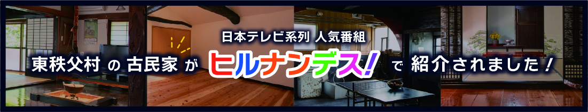
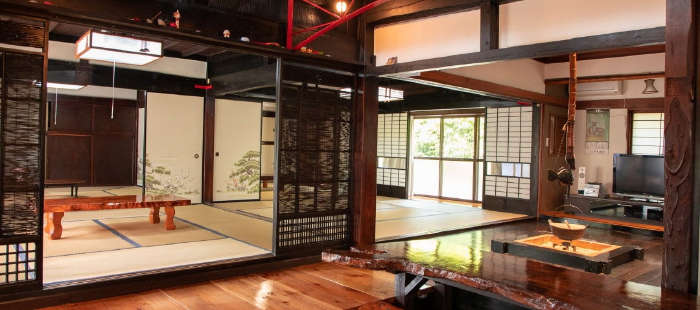
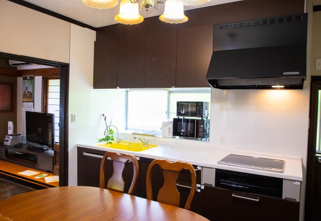
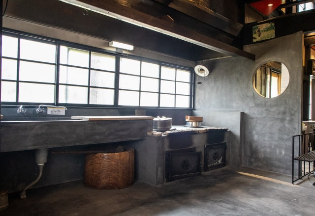
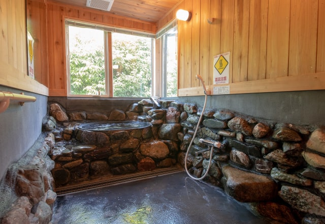
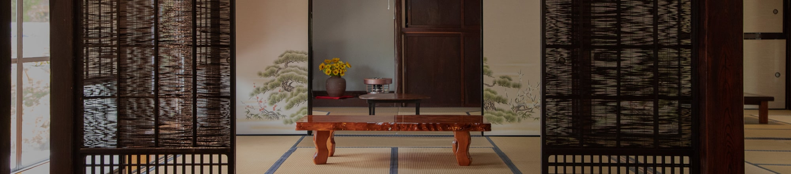

こんにちは。 温泉とキャンプ、そしてみんなでワイワイ過ごすのが大好きなナマケモノです🦥
2026年2月21日〜22日にかけて、 埼玉県・東秩父村にある古民家1棟貸しの宿「ようこそ古民家へ」に グループで宿泊してきました。
今回の旅を一言でまとめると、
- 築95年の大正時代の古民家を1棟まるごと貸切
- キッチンと釜戸でみんなで夕食を作る
- 五右衛門風呂・野外風呂・ユニットバス、3種のお風呂を堪能
- 囲炉裏を囲んでの宴会で夜更かし
という、「非日常なのに、どこか懐かしい」 最高のグループ体験でした。
🏡 到着。大正時代にタイムスリップ
車を走らせて東秩父村へ。 山あいの静かな集落を抜けると、 築95年という大正時代の木造家屋が見えてきました。
玄関をくぐると、 木の柱や梁がそのまま残された趣ある空間。 リノベーションされているので清潔感がありつつも、 どこか昔のおばあちゃんの家に来たような安心感。

建物は7LDK・100坪の2階建て。 和室4部屋＋洋室3部屋というゆとりの広さで、 グループで泊まっても全然窮屈じゃありません。 到着してまずは囲炉裏を囲んで、みんなで「おーっ」とテンション爆上がり🦥
🍳 みんなで作る夕飯。キッチン＋釜戸がある贅沢
この古民家の魅力のひとつが、キッチンと釜戸が両方使えること。
調理器具一式は宿に揃っているので、 食材だけ持ち込めばOK。 今回はスーパーで買い出しして、 みんなで手分けして料理開始。

キッチンは普段使いできる広さで、 複数人が同時に立っても問題なし。 釜戸も残されていて、ピザを焼いたりもできるとのこと。 大正時代の香りを感じながらの調理体験、 これはなかなかできません。

みんなで作った料理を並べて、「いただきます」。 外で食べるキャンプ飯とはまた違う、 屋根の下で囲む手作りごはんの温かさ。 ナマケモノ、幸せすぎて動けません🦥🍚
♨️ 3つのお風呂を制覇。五右衛門風呂が最高
そしてこの宿の目玉が、3種類のお風呂です。
① 五右衛門風呂（ジャグジー機能付き）
まずはメインイベント、五右衛門風呂。 なんとジャグジー機能が付いていて、 昔懐かしいのに現代の快適さもある不思議な体験。

丸い湯船にゆっくり沈むと、 「あ、時代劇のあれだ…」という感動が。 初めての人は絶対テンション上がります。
② 野外風呂
外にはもうひとつ、野外風呂があります。 2月の澄んだ空気の中、 外のお風呂に浸かるのは格別。 星が見えたらもう最高でしょう。
③ ユニットバス
「今すぐサッと入りたい」ときはユニットバスも完備。 見慣れたお風呂がちゃんとあるのは安心感です。
3つのお風呂を順番に入って、 みんなで「どれが一番よかった？」と語り合う。 これだけで一晩の話題になります🦥♨️
🍶 囲炉裏を囲んで宴会。夜はまだまだ終わらない
お風呂を満喫した後は、 囲炉裏のある和室に集合して宴会スタート！
1棟貸しだから他のお客さんを気にする必要がないのが最高。 多少騒いでも、笑い声が響いても、 ここは今夜だけのプライベート空間。

お酒を持ち寄って、 おつまみを並べて、 ゲームをしたり昔話をしたり。 畳の上でゴロゴロしながら語り合う時間は、 旅館やホテルでは味わえない贅沢です。
ナマケモノ、気づいたら朝になっていました🦥💤
🌅 翌朝。釜戸の残り香で目覚める
翌朝、古民家に差し込む朝日で目が覚めました。 障子越しの柔らかい光と、 昨日の釜戸のほんのり焦げた香り。
みんなでのんびり朝ごはんを食べて、 片付けをして、 名残惜しいけどチェックアウト。
「また来年もやろう」とみんなが口をそろえる。 それくらい、記憶に残る1泊2日でした。
ℹ️ 宿の情報まとめ
気になった方のために、今回お世話になった宿の情報を貼っておきますね。
📍 ようこそ古民家へ 東秩父村
- 住所: 〒355-0373 埼玉県秩父郡東秩父村奥沢137
- TEL: 0494-53-9153
- チェックイン: 14:00（最終18:00）
- チェックアウト: 10:00
- 建物: 2階建 / 100坪 / 7LDK（和室4・洋室3）
- お風呂: 五右衛門風呂 / ユニットバス / 野外風呂
- 設備: 囲炉裏 / 釜戸 / キッチン / BBQセット / エアコン / Wi-Fi / 洗濯機
- 駐車場: 2台まで無料（それ以上は近隣の村営無料駐車場あり）
- Web: https://kominkataiken.com/higashichichibumura/
📝 まとめ｜"泊まる"より"暮らす"に近い体験
今回の東秩父村・古民家グループ旅を ナマケモノ目線でまとめると、
- 雰囲気：◎◎◎（大正時代の趣が最高）
- 自炊体験：◎（キッチン＋釜戸で本格派）
- お風呂：◎◎◎（五右衛門風呂は一度は体験すべき）
- プライベート感：◎◎◎（1棟貸しの安心感）
- グループ満足度：最高
「みんなで料理して、お風呂に入って、飲んで語る」 ただそれだけのことが、古民家という空間だと 特別な思い出に変わります。
仲間との「何もしないけど最高に楽しい」時間を過ごしたい人には、 心からおすすめできる宿でした。
次は夏にBBQで再訪したいと思います🦥🏡